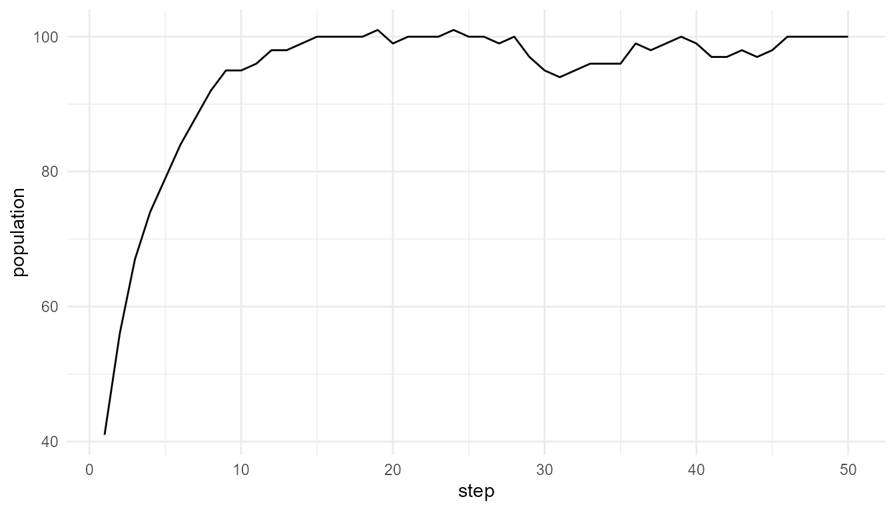

Artificial Life and Consciousness Debates
Source:vignettes/alife-consciousness-debates.Rmd
alife-consciousness-debates.RmdPurpose
This article explains how artificial life relates to consciousness debates. Artificial-life systems can show life-like organization, adaptation, reproduction, and population dynamics without being conscious. This distinction is essential for responsible interpretation (Bedau 2003; Boden 2006; Chalmers 1996; Dehaene 2014).
The purpose of this chapter is to clarify what artificial-life models can contribute to discussions of consciousness, and what they cannot demonstrate on their own.
The guiding question is:
What can artificial-life models contribute to consciousness debates, and what do they leave unresolved?
Why artificial life enters consciousness debates
Artificial life is relevant to consciousness debates because it studies systems that appear organized, adaptive, and agent-like. These are also features often discussed in cognitive science and philosophy of mind.
Artificial-life models may include:
- agents;
- environments;
- resource use;
- reproduction;
- mutation;
- selection;
- adaptation;
- population dynamics;
- self-organization;
- emergent behavior.
These features can make artificial-life systems appear purposeful or life-like. However, life-like behavior is not the same as consciousness.
This chapter focuses on that distinction.
Life-like is not mind-like
Artificial-life models may show reproduction, adaptation, resource use, population dynamics, or self-organization. These properties are interesting, but they do not imply consciousness.
A system can be life-like in some respects without having:
- subjective experience;
- awareness;
- conscious access;
- reportability;
- attention;
- memory;
- reasoning;
- self-modeling;
- intentional understanding.
For example, a simulation may show agents competing for resources and reproducing over time. That may be useful for thinking about adaptation or selection, but it does not show that the agents experience anything.
This is one of the most important responsible-use points:
Life-like dynamics are not evidence of subjective experience.
Life-like, cognitive-like, and conscious-like
It is useful to distinguish three levels of description.
| Description | Meaning | Example |
|---|---|---|
| Life-like | The system resembles some features of living systems | reproduction, mutation, selection |
| Cognitive-like | The system resembles some features of information-processing agents | sensing, memory, decision rules |
| Conscious-like | The system is claimed to involve conscious access or experience | awareness, subjective experience, reportability |
Artificial-life models often operate at the first level. Some artificial-life models may also explore cognitive-like behavior if agents have perception, memory, learning, or decision-making.
However, the third level is much more difficult. Consciousness involves additional theoretical and philosophical questions.
Consciousness requires additional questions
Consciousness debates often focus on questions such as:
- Is information globally available?
- Is there selective attention?
- Is there integration across subsystems?
- Is there recurrent processing?
- Is there memory or reportability?
- Is there a self-model?
- Is there embodiment or agency?
- Is there subjective experience?
- What would count as evidence of consciousness?
Artificial-life models may help think about agency, adaptation, and environment, but they do not answer these questions by themselves.
A model can show adaptive behavior without conscious experience. A model can show population-level complexity without awareness. A model can show selection without cognition.
Example: population dynamics does not imply consciousness
The following example simulates a simplified population over time.
pop <- simulate_population_dynamics(
initial_population = 40,
steps = 50,
seed = 12
)
tail(pop$summary)
#> step population mean_energy mean_efficiency trait_sd
#> 45 45 98 0.8696323 0.5788329 0.07425769
#> 46 46 100 0.8535785 0.5810669 0.07523466
#> 47 47 100 0.8481017 0.5810669 0.07523466
#> 48 48 100 0.8443759 0.5810669 0.07523466
#> 49 49 100 0.8381049 0.5810669 0.07523466
#> 50 50 100 0.8351851 0.5834446 0.07416337Visualize population change
if ("population" %in% names(pop$summary)) {
plot_alife_sim(
pop$summary,
x = "step",
y = "population",
type = "line"
)
}
Interpretation
The model may show population growth, population decline, or changing population structure. Depending on the function settings, it may also show trait variation or selection-like dynamics.
A careful interpretation is:
The model illustrates simplified population dynamics in an artificial-life simulation.
An overstatement would be:
The model demonstrates consciousness or subjective experience.
The first statement is appropriate. The second is not.
Why population dynamics are not consciousness
Population dynamics describe changes in the number or traits of agents over time. Consciousness, however, concerns questions about awareness, access, experience, and mental organization.
A population can change without any individual being conscious. Natural selection can shape traits without awareness. A system can adapt without experience.
This is why artificial-life models must be interpreted carefully. They are valuable for studying life-like organization, but they do not automatically cross into consciousness.
Artificial life and agency
Artificial life can still contribute to consciousness debates by clarifying the idea of agency.
In artificial-life models, agents may:
- move;
- consume resources;
- reproduce;
- mutate;
- respond to environmental conditions;
- survive or die based on simple rules.
This kind of agency is minimal and functional. It means that the agent behaves as a unit in the model. It does not mean the agent has intentions, awareness, or experience.
Artificial life therefore helps separate different meanings of agency:
| Type of agency | Meaning |
|---|---|
| Minimal model agency | The agent acts according to rules in a simulation |
| Biological agency | The organism maintains itself and acts in an environment |
| Cognitive agency | The system processes information and guides behavior |
| Conscious agency | The system has awareness or subjective experience |
artificialLifeR mainly models minimal artificial-life
agency.
Artificial life and embodied cognition
Artificial life is relevant to embodied and situated approaches to cognition because it emphasizes agents acting in environments (Boden 2006).
Embodied approaches often argue that cognition is not only internal computation. It also depends on:
- bodily action;
- environmental feedback;
- perception-action loops;
- adaptation;
- situated behavior;
- interaction over time.
Artificial-life models can help illustrate these ideas in simplified form. They show how behavior can arise from agent-environment interaction rather than from centralized planning alone.
However, relevance is not equivalence. A model can support conceptual thinking about embodiment without proving consciousness.
Artificial life and emergence
Artificial life is also connected to emergence. Life-like patterns may arise from local rules, interactions, resource constraints, and selection-like processes.
For example:
- reproduction can generate population growth;
- mutation can generate variation;
- selection can shift trait distributions;
- resource limits can constrain survival;
- local interactions can generate system-level patterns.
These are emergent or emergence-like dynamics. But emergence alone is not consciousness.
This is a key point:
Consciousness may involve emergence, but not every emergent system is conscious.
Artificial life and origin-of-life questions
Artificial life can also contribute to origin-of-life thinking. Origin-of-life research asks how chemical systems became organized, self-maintaining, and evolvable. Artificial-life models provide simplified ways to explore related ideas such as reproduction, variation, selection, and environmental constraint.
However, a digital population model is not a full origin-of-life model. It does not simulate real chemistry, metabolism, membranes, or molecular evolution in detail.
A careful interpretation is:
Artificial-life models can help explore conceptual ingredients of life-like organization.
not:
Artificial-life models fully explain the origin of life.
Relation to consciousnessModelR
artificialLifeR and consciousnessModelR can
complement each other.
| Package | Main focus |
|---|---|
artificialLifeR |
Life-like organization, agents, resources, reproduction, mutation, selection, population dynamics |
consciousnessModelR |
Attention, broadcast, integration, access, awareness thresholds |
emergenceModelR |
Emergence, self-organization, local rules, agent interactions, networks, complexity |
Together, they support a broader portfolio about life, emergence, complexity, cognition, and consciousness.
The packages should still be kept conceptually distinct.
artificialLifeR is not a consciousness package.
consciousnessModelR is not an origin-of-life package.
emergenceModelR provides the bridge by focusing on local
rules and system-level organization.
What artificial life can contribute
Artificial life can contribute to consciousness debates by helping researchers and learners think about:
- agent-environment interaction;
- adaptive behavior;
- embodiment;
- self-organization;
- emergence;
- population-level dynamics;
- minimal agency;
- the difference between life-like behavior and mind-like behavior.
These contributions are conceptual and educational.
What artificial life does not settle
Artificial life does not, by itself, settle questions such as:
- What is subjective experience?
- What makes a system conscious?
- Can a simulation have experience?
- Is functional behavior enough for consciousness?
- Does embodiment matter for consciousness?
- Can artificial agents be conscious?
- What evidence would be sufficient?
These remain open and debated questions.
Strong and weak claims
A useful way to keep the discussion responsible is to separate weaker and stronger claims.
| Claim | Responsible? | Why |
|---|---|---|
| Artificial-life models can illustrate life-like dynamics | Yes | This is what the models are designed to do |
| Artificial-life models can inform discussions of agency and adaptation | Yes | They help clarify concepts |
| Artificial-life models can support thinking about embodiment | Yes, carefully | They include agent-environment interaction |
| Artificial-life models prove artificial systems are conscious | No | The models do not demonstrate experience |
| Population dynamics imply awareness | No | Population change is not consciousness |
| Adaptation alone is evidence of subjective experience | No | Adaptation can occur without awareness |
This distinction protects the academic credibility of the package.
Responsible interpretation
It is better to say:
Artificial-life models can inform discussions of agency, adaptation, embodiment, and organization.
than:
Artificial-life models show that artificial systems are conscious.
It is better to say:
This simulation shows life-like population dynamics.
than:
This simulation shows awareness.
It is better to say:
Artificial life may help frame some consciousness questions.
than:
Artificial life solves the problem of consciousness.
Educational use
This chapter can support several classroom or self-study questions:
- What is the difference between life-like and conscious-like behavior?
- Can adaptation occur without awareness?
- What does artificial life contribute to cognitive science?
- Why does agent-environment interaction matter?
- What additional features would a consciousness model need?
- Why is subjective experience difficult to model?
- How do artificial life, emergence, and consciousness relate without being identical?
These questions help learners avoid overclaiming while still appreciating the value of artificial-life models.
Key takeaway
Artificial life is relevant to consciousness debates because it explores agents, environments, adaptation, embodiment, and organization. These concepts matter for thinking about mind and cognition.
However, artificial life does not by itself explain or demonstrate consciousness. Life-like dynamics are not evidence of subjective experience.
artificialLifeR should therefore be understood as an
educational package for exploring life-like organization, not as a tool
for detecting, measuring, or creating consciousness.